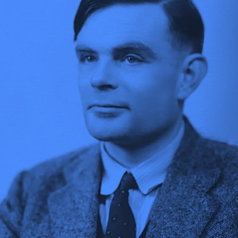
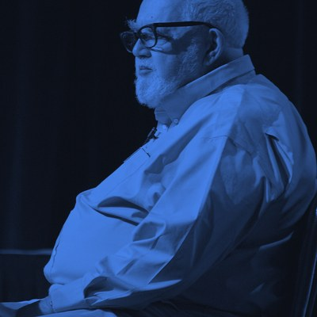
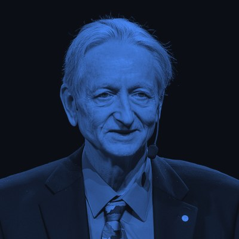
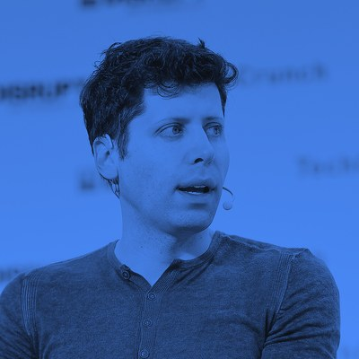

Desde tu primer prompt hasta la arquitectura Transformer, explicado en español claro. Sin promesas de dinero fácil: la IA amplifica tu esfuerzo, no lo reemplaza.
// escrito para novatos absolutos y entusiastas avanzados — sin jerga innecesaria
Existe una industria entera vendiendo la fantasía del "dinero fácil con IA". Aquí no. Creemos en otra cosa.
La IA multiplica tu capacidad y tu velocidad. Si no tienes una habilidad o una disciplina de base, multiplica cero por cero.
Los resultados que ves en redes sociales suelen esconder meses de práctica, iteración y errores. Aquí te mostramos ese proceso completo.
Preferimos enseñarte a pescar: entender el porqué de cada herramienta para que sigas siendo relevante cuando la próxima "IA revolucionaria" aparezca.
La IA no nació en 2022. Es la culminación de 70 años de trabajo de personas concretas, con sus aciertos y sus décadas de fracaso.

En su artículo "Computing Machinery and Intelligence", Turing propone el famoso "Test de Turing": en vez de preguntar si una máquina "piensa", propone algo medible: si una persona no puede distinguir sus respuestas de las de un humano.

John McCarthy acuña el término "Inteligencia Artificial" durante un taller de verano en Dartmouth College, fundando oficialmente el campo como disciplina de investigación.
Frank Rosenblatt construye el Perceptrón, la primera red neuronal artificial funcional, inspirada de forma simplificada en cómo se cree que funcionan las neuronas biológicas.
Las promesas exageradas de las décadas anteriores no se cumplen al ritmo esperado. La financiación se seca y el campo entra en un letargo de casi veinte años, salvo por avances puntuales en sistemas expertos.
La supercomputadora de IBM derrota al campeón mundial de ajedrez Garri Kaspárov, la primera vez que el público general "siente" en carne propia el poder de la IA.

Geoffrey Hinton y su equipo presentan AlexNet en la competencia ImageNet, demostrando que las redes neuronales profundas superan por goleada a cualquier otro método de visión por computadora. Es el punto de inflexión moderno.
Un equipo de investigadores de Google publica el artículo que introduce la arquitectura Transformer, la base técnica de absolutamente todos los modelos de lenguaje modernos, incluido el que probablemente uses hoy.
El equipo de Demis Hassabis en DeepMind presenta AlphaFold, capaz de predecir la estructura 3D de las proteínas con precisión casi experimental, acelerando la investigación biomédica mundial.

OpenAI, bajo la dirección de Sam Altman, lanza ChatGPT en noviembre. En cuestión de semanas, millones de personas usan un modelo de lenguaje grande (LLM) por primera vez. La IA generativa deja de ser un tema de laboratorio.
Yann LeCun impulsa en Meta el enfoque de modelos abiertos (LLaMA); Anthropic, Google y otros laboratorios lanzan asistentes cada vez más capaces y multimodales, capaces de leer imágenes, escuchar audio y escribir código.
El foco se desplaza de "modelos que responden" a "agentes que actúan": sistemas capaces de planear varios pasos, usar herramientas externas y ejecutar tareas completas con supervisión humana.
Este es uno de los puntos donde más se confunde al público. Aquí está la diferencia real.
Sistemas entrenados para tareas específicas: escribir texto, reconocer imágenes, recomendar contenido. Todo lo que usas hoy —ChatGPT, Claude, los filtros de tu cámara— es esto. Ninguna IA actual "entiende" el mundo como una persona.
Una inteligencia capaz de razonar, aprender y adaptarse a cualquier tarea intelectual humana, con la misma flexibilidad que una persona. No existe todavía; es objeto de debate cuándo (o si) llegará.
Un sistema que superaría la capacidad intelectual humana en prácticamente todos los dominios. Terreno de la investigación en seguridad de IA y de la ciencia ficción a partes iguales; no es un producto disponible.
Cinco términos que aparecen en cada conversación sobre IA, traducidos a la vida real.
Es un conjunto enorme de "interruptores" (neuronas artificiales) organizados en capas, conectados entre sí con distintos "pesos" o niveles de importancia. La información entra por un extremo y va pasando de capa en capa, ajustándose en cada paso.
Son los "pesos" ajustables que mencionamos arriba: los números internos que el modelo afina durante el entrenamiento. Un modelo con más parámetros no es automáticamente "más inteligente", pero sí tiene mayor capacidad para capturar patrones complejos.
El modelo no lee "palabras" tal como nosotros; divide el texto en fragmentos llamados tokens (a veces una palabra completa, a veces un pedazo de ella). Todo lo que escribes y todo lo que el modelo responde se mide en tokens.
Es la cantidad máxima de tokens (de tu conversación completa, documentos incluidos) que el modelo puede "tener presente" a la vez al generar una respuesta. Una vez se llena, la información más antigua empieza a perderse.
Un parámetro que controla cuánto "riesgo" toma el modelo al elegir la siguiente palabra. Temperatura baja produce respuestas más predecibles y conservadoras; temperatura alta produce respuestas más variadas y creativas (pero también más erráticas).
Cuando el modelo genera información que suena convincente y segura, pero que es falsa o inventada. No "miente" a propósito: simplemente predice la secuencia de palabras más probable, y a veces esa secuencia no corresponde con la realidad.
Clasificación honesta, sin recomendar 40 apps redundantes. Solo lo que aporta.
Asistente conversacional orientado a escritura, análisis y razonamiento extenso.
Uso diarioEl asistente generalista más conocido; fuerte en versatilidad y ecosistema de plugins.
Uso diarioIA integrada directamente en tu espacio de notas y gestión de proyectos.
OrganizaciónAsistente de Google con integración profunda al buscador y a Workspace.
Integración GoogleGeneración de imágenes con una estética distintiva, muy usada en diseño e ilustración.
ImagenEdición y generación de video asistida por IA, popular entre creadores audiovisuales.
VideoSíntesis de voz realista, útil para narración, doblaje y accesibilidad.
AudioSuite de diseño con funciones de IA integradas para quienes no vienen del diseño gráfico.
Diseño accesibleAutocompletado de código con IA integrado en el editor, entrenado en millones de repositorios.
CódigoEditor de código construido desde cero alrededor de la asistencia de IA.
CódigoAgente de línea de comandos para tareas de programación delegadas de principio a fin.
Agente de códigoMotor de búsqueda conversacional que cita sus fuentes en cada respuesta.
InvestigaciónAnálisis de datos y hojas de cálculo mediante lenguaje natural.
DatosEl mismo modelo, dos resultados completamente distintos, según cómo se le hable.
Este método se conoce como RCTR: cuanto más específico seas en estas cuatro dimensiones, menos "adivinará" el modelo y más se acercará tu primer resultado a lo que realmente necesitas.
10 rutas de especialización para quienes quieren pasar de usar IA por curiosidad a dominarla como ventaja profesional real.
Aprende a estructurar prompts de nivel profesional junto a ingenieros formados en la UBA, con ejercicios prácticos aplicables desde el primer día.
Ver ruta completa →Construye una aplicación funcional apoyándote en herramientas de IA, incluso si nunca has escrito una línea de código.
Ver ruta completa →Genera artes listos para imprimir en sublimación, DTF y serigrafía con IA — pensado para quienes ya tienen, o quieren montar, un negocio de personalización.
Ver ruta completa →El flujo completo para producir y publicar contenido de YouTube apoyado en IA, de guion a edición.
Ver ruta completa →Aplica IA a tu proceso comercial para vender más, con técnicas prácticas para atraer y cerrar clientes.
Ver ruta completa →Un paquete integral de herramientas y estrategias de IA pensado para aplicarse directamente en la operación diaria de tu negocio.
Ver ruta completa →Herramientas y métodos de IA pensados específicamente para docentes, para ahorrar tiempo en planificación y evaluación.
Ver ruta completa →Un recorrido extenso por la IA aplicada, pensado para quienes quieren ir más allá de lo básico y dominarla en profundidad.
Ver ruta completa →Un sistema de automatización basado en IA para reducir el trabajo manual en tareas repetitivas de tu negocio.
Ver ruta completa →Crea y publica ebooks apoyándote en IA, usando solo tu teléfono, sin necesidad de equipo especializado.
Ver ruta completa →Únete a quienes reciben una guía práctica a la semana, sin relleno ni promesas vacías.
Ir al formulario ↑